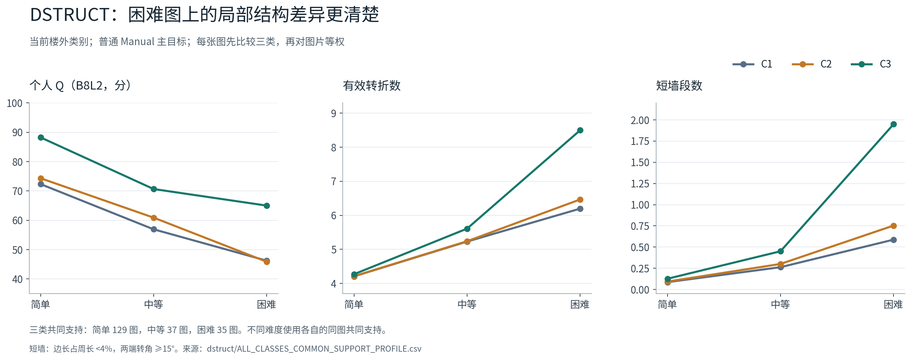
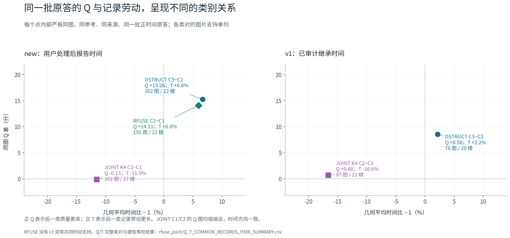
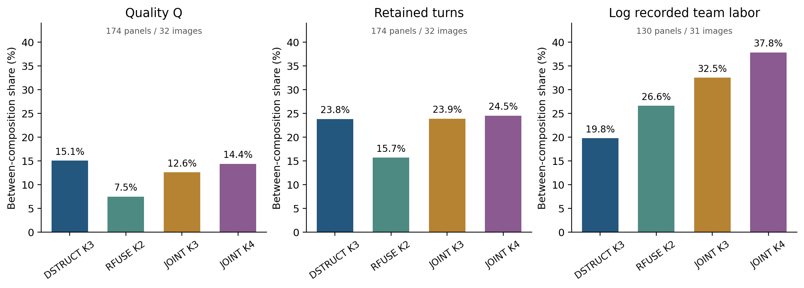

1. 类别在原答中有什么区别
DSTRUCT 在 201 张三类共同图片上的平均 Q 为 64.97 / 66.91 / 80.97。C3 的困难图结构保留更多，位置误差更小。RFUSE 的较高困难结构响应类也有相近的原答联系。JOINT 同时组织质量与劳动特征，其编号不构成稳定的低、中、高质量梯度。
每个指标先取同图、同合法目标中的类均值，再对图片等权。每个方法内部使用全部类别共同支持；不同方法的图数可以不同。时间在下一节按共同原答单独比较。

2. 同一批原答的 Q 与记录劳动
质量较高不必对应大幅更长的记录劳动。JOINT K4 的 C2 相对 C1，在 new 来源 162 图上 Q 差仅 −0.133 分，几何时间比 0.885；v1 来源 87 图上 Q 差 +0.678 分，时间比 0.834。不同类对和来源的关系全部保留在表中。
沿用上方分类、方式、目标及难度选择。每行 Q/T 都来自相同的正时间原答；差值为后一类减前一类，T 比大于 1 表示后一类更长。算术秒差与几何时间比分列。

3. 在同一张原图上看完整标注
典型例按照各类的结构与位置特征中位接近度选择，每类至多两人；K4 C3 在这四图上各只有一人并全部展示，选样不使用 Q/T。三张主图来自同一建筑的楼外模型折，另有跨楼附例及近共线诊断对照。图册保留上下边界、原顺序、参考、底面、个人 Q 分项与记录时间。
打开可离线切换的完整原图图册 直接查看 JOINT K4 四类
第 10 批在相同四图新增 K4 的 28 个展示位。图册现有 92 个典型位、1 个近共线附例、39 个不同原答，原统计数值保持。K4 补充说明与全部个人指标


4. 类别、比例、成员与背景怎样影响团队
严格 ABC：幅度与方向
DSTRUCT 14 人换 7 人，当前合法辅助版的对称跨类额外 Q 变化为 +3.441 分，50/69 图为正；C−B 为 +6.712 分，65/69 图为正。多数图的转折额外变化为零，质量差还来自边界、方向、高度与面积分项。
直接 AC：均值与变化分布
RFUSE 20/4 的 Q 平均差为 +2.934，77/82 图为正。JOINT K3 20/10 的均值为 +0.297，但平均绝对变化为 3.282，42 图升、40 图降，表明方向抵消。
完全相同的既有团队集合
共同支持为 174 面板、32 图、21 楼；每面板完整覆盖 924 支已存在团队。Q 有效 159,655 队次；时间为 130 面板、31 图、116,966 个同源有效队次。方差先按面板、池、图片、建筑汇总，再计算份额；K3/K4 分区细化本身也会影响份额。

完整联盟、固定比例换成员、固定替换块换背景分别保留其实际人数与支持。主目标全部已分类人员合并队在 169/205 图上弱于至少一支纯类队，这是事后完整组合的观察；具体选员和进入策略仍使用各自已有实验。
5. 完整报告、逐类表与复现入口
阅读完整整合报告研究目录说明三体系逐类总表逐类矩阵 CSV预处理、来源、权重与特征定义
本轮补充画像和已有团队重聚合，不改变分类、原答、参考、坐标或评分。当前类别的进入顺序与劳动分配用途，仍按相应实际应用证据判断。历史自动结果和固定节点人工辅助结果保留各自身份。